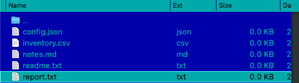

Vzhľad
Peach Commander sa môže zhodovať so vzhľadom zvyšku vášho Macu alebo prevziať vlastný štýl. Môžete sledovať svetlé alebo tmavé systémové nastavenie (alebo jedno vynútiť), prefarbiť panely súborov, zvýrazniť súbory podľa typu a upraviť veľkosť písma zoznamu a formát dátumu, aby sa panely čítali presne tak, ako máte radi.
Voľba farebného motívu
Motív nahradí celú paletu panelov jedným krokom.
- Otvorte okno nastavení voľbou Konfigurácia > Možnosti…, alebo stlačte Cmd+,.
- Vyberte stránku Farby.
- V ponuke Motív vyberte: - Systém (predvolené) — žiadny motív. Panely sa riadia nastavením Vzhľad nižšie, presne ako doteraz. Toto je predvolená voľba. - Svetlý / Tmavý — pevne nastaví vstavanú svetlú alebo tmavú paletu bez ohľadu na to, čo robí macOS. - Polnoc — tmavý motív, ktorý nie je len sivý: hlboko indigové panely s jemne modrosivým textom, bielym riadkom kurzora a jantárovou pre označené súbory. - Norton Commander — klasický modro-azúrový vzhľad pôvodného DOSového správcu súborov v pravých farbách CGA: modré panely, azúrový text, svetloazúrový riadok kurzora a žltá pre označené súbory.
Motív prináša vlastný svetlý/tmavý základ, aby k nemu ladili hárky, posuvníky aj štandardné ovládacie prvky — preto je ponuka Vzhľad zosivená, kým je motív zvolený. Vlastné farby panelov (nižšie) majú pred motívom stále prednosť.
 (Obrázok: paleta Norton Commander — pôvodná modrá, azúrová a žltá CGA.)
(Obrázok: paleta Norton Commander — pôvodná modrá, azúrová a žltá CGA.)
Motív Norton Commander používa pravé hodnoty CGA z originálu z roku 1986: #0000AA modrá, #00AAAA azúrová, #55FFFF pre riadok kurzora, #FFFF55 pre označené súbory. Pruh kurzora sa prevracia na tmavý text na azúrovej, ako ho kreslil originál, zatiaľ čo označené súbory si ponechávajú žltú.

(Obrázok: pruh kurzora sa prevracia; označené súbory zostávajú žlté.) (Obrázok: vlastné okná aplikácie sa motívom riadia tiež.)
(Obrázok: vlastné okná aplikácie sa motívom riadia tiež.)
Motívy sú iba farby. Usporiadanie panelov, rámčeky a písma zostávajú nezmenené — Norton Commander nevracia dvojité rámčeky ani rastrové písmo DOS.
Napíšte si vlastný motív
Motívy sú obyčajné textové súbory, jeden na motív, v priečinku themes vnútri vášho konfiguračného priečinka.
- Na stránke Farby kliknite na Priečinok motívov…. Priečinok sa vytvorí, ak neexistuje, a keď je prvýkrát prázdny, Peach Commander doň vloží okomentovaný súbor
example-norton.iniso zoznamom všetkých farieb, ktoré možno nastaviť. - Súbor skopírujte, pomenujte ho nanovo a upravte. Názov súboru (bez
.ini) je identifikátor motívu; riadokNameje to, čo zobrazuje ponuka Motív. - Uložte. Otvorte ponuku Motív znova — váš motív je v zozname. Reštart nie je potrebný.
Minimálny motív má tri riadky:
[Theme]
Name = My Midnight
Base = dark
[Colors]
ListBackground = #101020
ListText = #C0C0D0
 (Obrázok: motív načítaný zo súboru v priečinku motívov.)
(Obrázok: motív načítaný zo súboru v priečinku motívov.)
Base volí vstavanú paletu (light alebo dark), ktorá dodá všetky farby, ktoré neuvediete, takže píšete len to, čo chcete zmeniť. Farby sa zadávajú ako #RRGGBB. Riadky začínajúce ; alebo # sú komentáre.
Ak je v súbore niečo zle, Peach Commander preskočí práve ten riadok a zvyšok motívu ponechá — súbor neodmietne. Dôvod sa zapíše do systémového denníka, viditeľného v Konzole po filtrovaní na [theme].
Názvy light, dark, norton a system patria vstavaným motívom; súbor s takým názvom sa preskočí, aby nemohol zatieniť dodávaný motív. Ak zmažete súbor zvoleného motívu, Peach Commander sa vráti na Systém (predvolené).
Nastavte svetlý, tmavý alebo systémový vzhľad
- Otvorte okno nastavení voľbou Konfigurácia > Možnosti…, alebo stlačte Cmd+,.
- Vyberte stránku Farby.
- V ponuke Vzhľad vyberte jednu z možností: - Systém (sledovať macOS) — automaticky sa zhoduje s aktuálnym svetlým/tmavým nastavením vášho Macu. - Svetlý — vždy použiť svetlú paletu. - Tmavý — vždy použiť tmavú paletu.
 (Obrázok: stránka Farby: vyberte vzhľad a prepíšte jednotlivé farby panelov.)
(Obrázok: stránka Farby: vyberte vzhľad a prepíšte jednotlivé farby panelov.)
Prispôsobte farby panelov
Na tej istej stránke Farby, pod Vlastné farby panelov, zapnite zaškrtávacie pole vedľa ľubovoľného prvku a vyberte farbu z poľa vedľa:
- Text — názvy súborov a priečinkov.
- Pozadie — pozadie panela.
- Vybraný text — farba použitá pre označené súbory.
- Rám kurzora — obrys okolo aktuálnej položky.
Nechajte zaškrtávacie pole vypnuté, aby ste zachovali vstavanú farbu pre daný prvok. Kliknite na Obnoviť predvolené na vyčistenie všetkých prepísaní naraz.
Zafarbite súbory podľa typu
- Otvorte Konfigurácia > Možnosti… a vyberte stránku Zobrazenie.
- Kliknite na Farby typov súborov….
- Pridajte pravidlo s maskou názvu, ako
*.zipalebo*.txt, potom vyberte farbu pre zhodujúce sa súbory. - Použite Pridať pravidlo pre viac masiek; kliknite na Hotovo na uloženie alebo Zrušiť na zahodenie.
Zhodujúce sa súbory sa potom zobrazia vo vybranej farbe v oboch paneloch.
Upravte veľkosť písma a formát dátumu
Na stránke Zobrazenie môžete tiež:
- Vybrať veľkosť písma zoznamu panelov v bodoch.
- Zadať vzor formátu dátumu na ovládanie zobrazenia dátumov úprav; nechajte prázdne na použitie regionálneho formátu vášho Macu. Pod poľom sa počas písania zobrazuje živý náhľad.
- Zapnúť Striedavé pozadie riadkov pre pruhy typu zebra, ktoré uľahčujú prehliadanie dlhých zoznamov.
Skratky
| Akcia | Skratka |
|---|---|
| Otvoriť nastavenia | Cmd+, |
Poznámky
- Ponuka Vzhľad pôsobí len vtedy, ak je motív Systém (predvolené); motív si určuje vlastný základ.
- Motív zafarbí aj vlastné okná aplikácie. Systémové okná — Otvoriť, Uložiť, výber farby a písma a upozornenia — si ponechávajú štandardný vzhľad, rovnako ako okná, ktoré si otvárajú zásuvné moduly.
- Nastavenie vzhľadu štýluje panely súborov. Systémové dialógy, upozornenia a štandardné ovládacie prvky vždy sledujú macOS.
- Vstavaný prehliadač súborov používa zhodujúce sa svetlé a tmavé palety zvýrazňovania syntaxe, takže zvýraznený kód zostáva čitateľný v oboch vzhľadoch.
- Vlastné farby a pravidlá typov súborov sa ukladajú s vašimi nastaveniami a znovu použijú vždy, keď otvoríte aplikáciu.